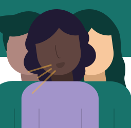
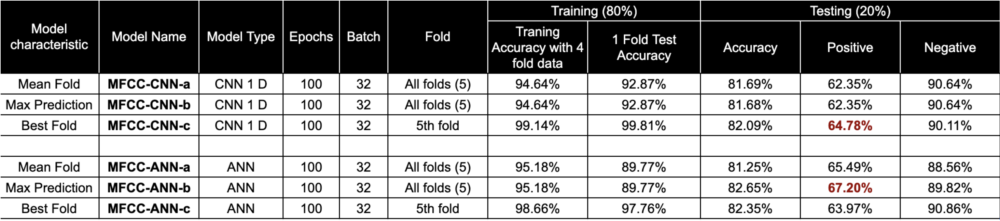

Authors
Gautam Ahuja [1], Aakash Rao [1], Diya Khurdiya [1], Shalini Balodi [1], Ashwin Salampuriya [1], Rintu Kutum [1,2,*]
Affiliations
- Department of Computer Science, Ashoka University, Haryana, India
- Trivedi School of Biosciences, Ashoka University, Haryana, India
*. Corresponding Author
Description
MFCC based neural network classifier to predict TB status from cough sound. We achieved best class-wise accuracy of 67.20% for positive with mel-frequency cepstral coefficients (MFCC) as features and artificial neural network (ANN) model.
- The audio file of a TB patient differentiates from a non-TB patient to a human ear. There is a bit of heaviness in a positive cough audio.
- Two approaches were selected: mel-frequency cepstral (MFCC) coefficients and scaled log2 mel-frequency spectrogram points.
- MFCC features were extracted and linearised with mean and standard deviation to produce 80 features used for modeling.
- For scaled log2 mel-frequency spectrogram, 2816 features were extracted and scaled between 0 and 1.
Methods
MFCC: Features were extracted with the librosa mfcc function, then linearised to form model-ready inputs for ANN and CNN1D models.
Scaled log2 mel-frequency spectrogram: Spectrogram points were extracted, transformed with log2, and scaled for learning.
Training and testing: Data was split 80:20 (train:test), and 5-fold validation was used during training.
ANN model: Three dense layers (100, 200 with dropout, 100) using ReLU, with softmax output and categorical cross-entropy.
CNN 1D model: Three Conv1D layers (32, 64, 128 filters), flatten and dense layers, with ReLU and softmax output.
Results

The results of our submission to the CODA TB Dream Challenge 2023.
Code repository
https://github.com/rintukutum/dream-coda-tb-sc1-chsxashoka
My role
I adviced on the project in terms of the design of the Artificial Neural Network as well as the benchmarking of other algorithms on the dataset.
Acknowledgements
We would like to acknowledge Mphasis F1 foundation, Centre for Computation Biology & Bioinformatics (BIC) computing facility, and High Performance Computing (HPC) at Ashoka University for support.
License
Please refer to the CODA-TB licensing guidelines.